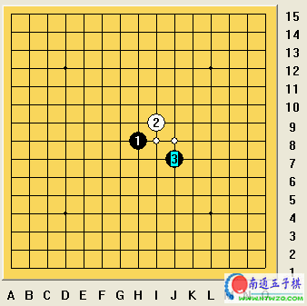

11月26日潇洒讲水月[lib谱]
首页
定式及研究
#1 11月26日潇洒讲水月[lib谱] 作者：有志青年 发表时间：2006-11-26 21:41:05

『齐鲁』林夕 打谱提供
 水月.rar
水月.rar
#2 Re:11月26日潇洒讲水月[lib谱] 作者：江南新绿 发表时间：2006-11-26 21:59:52
今天的？
#3 Re:11月26日潇洒讲水月[lib谱] 作者：26 发表时间：2006-11-26 23:38:21
xuexi
#4 Re:11月26日潇洒讲水月[lib谱] 作者：无尽 发表时间：2006-11-27 8:39:11
看~
#5 Re:11月26日潇洒讲水月[lib谱] 作者：九命猫 发表时间：2006-11-27 10:46:47
#6 Re:11月26日潇洒讲水月[lib谱] 作者：酒鬼 发表时间：2006-11-28 11:41:31
kan kan
#7 Re:11月26日潇洒讲水月[lib谱] 作者：潇洒 发表时间：2006-11-29 17:48:09
看看
#8 Re:11月26日潇洒讲水月[lib谱] 作者：天外天 发表时间：2006-12-31 13:38:42
跟老师学学
#9 Re:11月26日潇洒讲水月[lib谱] 作者：卓家公子 发表时间：2007-1-9 15:10:36
好东西要多看
#10 Re:11月26日潇洒讲水月[lib谱] 作者：天上掉个馅饼 发表时间：2007-1-22 15:58:02
学习中~~
#11 Re:11月26日潇洒讲水月[lib谱] 作者：叵 发表时间：2008-7-18 9:26:27
学习~
#12 Re:11月26日潇洒讲水月[lib谱] 作者：石投 发表时间：2008-7-27 10:54:35
谢谢.下载了.一定努力学习.
#13 Re:11月26日潇洒讲水月[lib谱] 作者：吕文鹏 发表时间：2008-7-31 15:08:28
这个局很强，不知怎么研究的，看看
#14 Re:11月26日潇洒讲水月[lib谱] 作者：旅行者 发表时间：2008-8-4 20:44:27
水月是必胜吗？
#15 Re:11月26日潇洒讲水月[lib谱] 作者：疏星终结 发表时间：2008-8-7 12:00:04
这可不是水中捞月，水月太强了
#16 Re:11月26日潇洒讲水月[lib谱] 作者：唐门小虎 发表时间：2009-7-30 9:19:01
这份棋谱就是大了点啊
#17 Re:11月26日潇洒讲水月[lib谱] 作者：起航 发表时间：2009-8-17 0:26:08
呵呵，下回去看看。